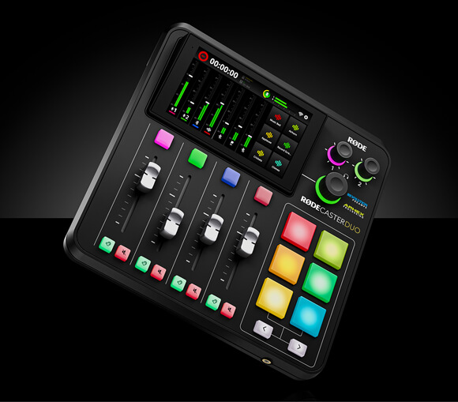

Latest From The RØDE Blog
Introducing the RØDECaster Duo – A Complete, Compact Audio Production Studio For Content Creators

The RØDECaster Duo packs all the power and flexibility of the RØDECaster Pro II into a more compact package, perfect for podcasters and content creators with smaller setups.